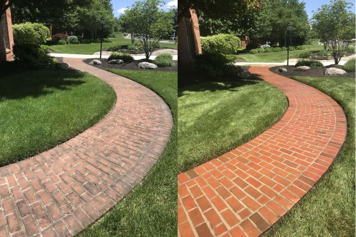
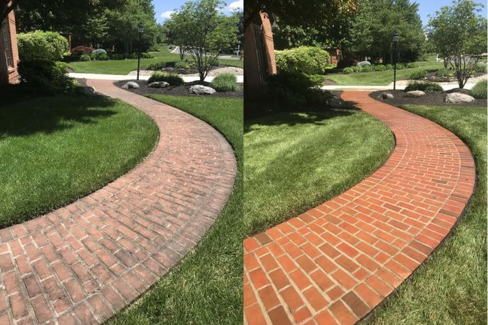

Unsere Leistungen:
-
Einfahrten & Gehwege reinigen
Wir entfernen Öl, Schmutz und Ablagerungen für saubere und sichere Oberflächen.
-
Geschäftsfronten reinigen
Ein sauberer Eingangsbereich sorgt für einen starken ersten Eindruck und zieht mehr Kunden an.
-
Terrassen & Zäune reinigen
Unsere Hochdruckreinigung bringt die natürliche Schönheit Ihres Holzes zur Geltung.


 
